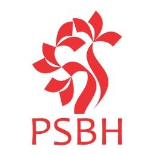

Besides public health research, HAP gives equivalent focus to building research capacity in the medical community including doctors and undergraduate students . The purpose of this is to conduct good research and entice them into the world of medical research.
Since 1993, Health Action by People has been associating itself with 71 medical colleges in India on an exciting health problem solving experiment with undergraduate medical students. The project titled Problem Solving for Better Health is international in character and exists in 30 countries. The Indian Programme is unique in focusing attention on medical students generally under the leadership of the Department of Community Medicine. The programme imparts problem solving skills in community health to undergraduate medical students through an intensely participatory workshop, lasting 3-4 days. The feedback from the faculty and students is quite positive. The programme fulfils the objectives laid down by Indian Medical Council , on learning public health and community Medicine
Health Action by People is the prime mover of this project in India. It is a group of competent public health professionals with a wide range of teaching and research experience. The success of the programme depends on the leadership provided by the host faculty in each college
During the workshop, the students identify ‘problems’ which are then developed into research protocols under the guidance of facilitators. After the workshop, the faculty selects a few protocols for implementation. The projects so selected are assigned to a group of 3-4 students.After completing the study the students have to present their work in a reunion workshop. The participating colleges were provided with some financial support from HAP for conducting workshops. The PSBH project was supported by Dreyfus Health Foundation (DHF), New York till October 2006. Presently the support given by HAP for the PSBH project and Research Methodology workshops as limited to providing certificates and badges to the participants and faculty
Health Action by People ( HAP) also conducts research clinics, which include methodology workshops and scientific assistance to young researchers. The main objective of the workshop is to train the participants on different phases of doing a good research from protocol preparation to final preparation of research report and dissemination of findings.
Participants : Clinical and non clinical post graduate students in medical colleges, Junior Faculty of the medical colleges.
Duration of workshop : 3 days
Workshop format : Participatory in nature
Activities involved
Total 25 hours
C R Soman School of Health Research (CRSSHeR) is a HAP initiative started in honour of its founder-chairman, Professor C R Soman. Prof. Soman had a passion for both teaching and research.
A series of workshops on research methodology were conducted under his leadership in many health institutions in India.CRSSHeR continues this tradition.
Our goal is to train the younger generation of teachers and researchers in health, including doctors, nurses and other health workers, so that they are capable of undertaking independent research on the problems facing the state.
CRSSHeR conducts research workshops both at its headquarters in Trivandrum, as well as in collaboration with other institutions.Major themes of recent workshops have been: Research Methodology, Occurrence Measures in Epidemiology, Measurement in Health Research, Descriptive Statistics using R and others.
Workshops and seminars will be announced in the HAP website at regular intervals. Those interested are requested to keep track of these events.
For encouraging original research work by post graduate students in Government Medical Colleges of Kerala, we have instituted an award for the best post graduate thesis. This is named after the founder-chairman of Health Action by People, Dr C R Soman. The award comprises cash prize of Rs. 25,000/- and a certificate which will be granted annually.
Any post graduate medical student in a government medical college in the Modern Medicine stream, submitting a thesis to the Kerala University of Health Sciences for an MD / MS degree in a particular academic year can apply. June 30th of each year will be the cut-off date for eligibility. The entry must be endorsed by the head of the department.
The journal club was started recently, to enhance research skills among doctors and post graduate students in medicine and public health. HAP members and other renowned academicians give talks on important and relevant topics on health research, touching on methodology, analysis, presentation, relevance and content update. Apart from this, participants are encouraged to present critiques of important published journal articles. This is a regular monthly activity conducted usually on the third Tuesday of every month, unless otherwise inconvenient. Meeting provides a platform for critical evaluation of current literature whilst building the importance of research in clinical and public health practice.
India is moving its focus from control of communicable disease now to addressing the dual burden of communicable and non-communicable diseases. The state of Kerala, with great achievements in healthcare, is now facing a rising burden of non-communicable diseases. The state is making attempts to tackle this growing problem. Health Action by People has made significant contributions in the past to highlight the fact that we need to address non-communicable diseases and provided rich information on the epidemiology of non-communicable diseases in Kerala. Now HAP is moving towards activities in prevention of non-communicable diseases and training of health care professionals and public about these diseases. A non-communicable disease prevention and training unit (NPTU) is being set up, in partnership with St. John’s Research institute, Bangalore. Two subunits of the NPTU unit, already set up, will be addressing Chronic Respiratory Diseases and School Health. Other sub-units are being set up to address all other non-communicable diseases, including Diabetes, Cardiovascular diseases, Stroke, Mental Health, etc.